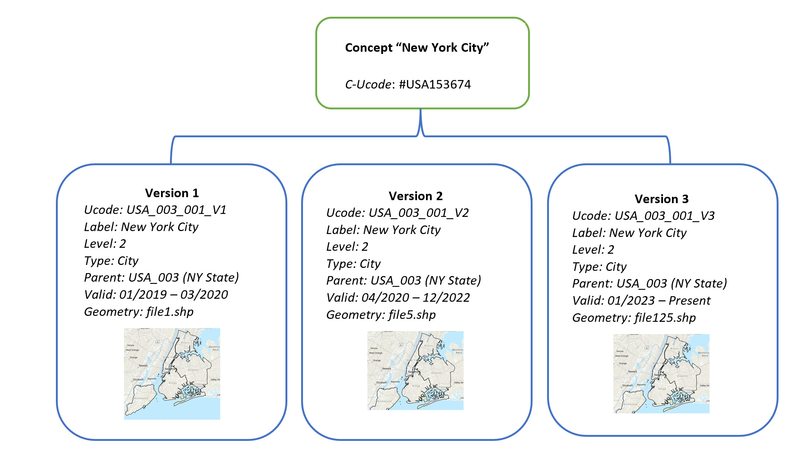
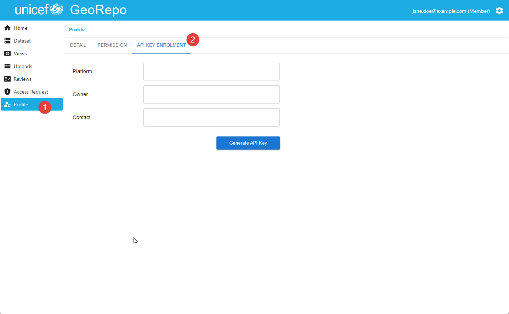
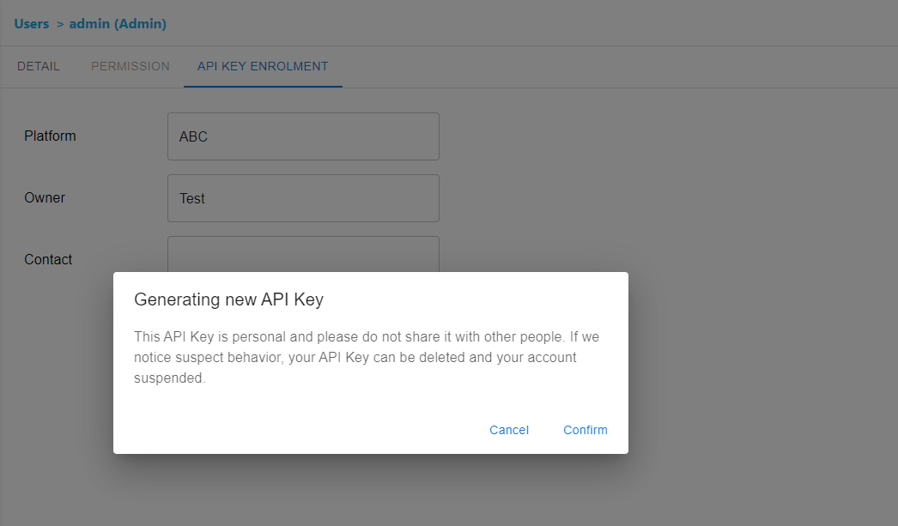
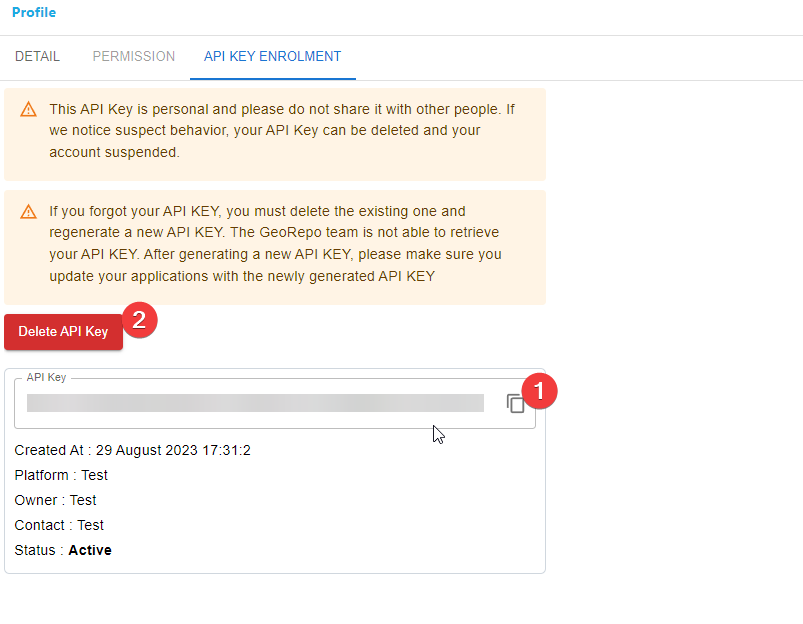

12. API Guide¶
GeoRepo is a centralized geospatial open-source data repository platform for managing and sharing common geospatial datasets (such as administrative boundaries, health facilities etc.) that can be integrated via API with other corporate systems.
GeoRepo provides access to the data through a RESTful API, available at https://georepo.unicef.org/api/.
📔Note: If you have deployed your own instance, you need to use the base domain for your instance for all examples.
In order to use the API, the user must be authenticated and must have authorization to access the data.
GeoRepo is organized into modules. A module is an artifact that groups geospatial datasets that share similar features and concepts. For example, the module "Admin Boundaries" includes all the datasets related to admin boundaries, including the "official UNICEF admin boundaries dataset", as well as admin boundaries datasets from other organizations and institutions.
A dataset is organized in views. A view is a concept similar to an SQL view, it is a way of seeing a specific portion of a dataset. For example, for a given dataset, there will be a view to access the whole dataset (including previous versions), a view to see only the most recent version of the dataset, and views defined by users to access only specific portions of the dataset.
Finally, the data. A view is composed of a set of geographical entities, whose meaning depends on the specific module. For example, the "Admin Boundaries" will contain a hierarchy of countries and their administrative divisions. In this context, a geographical entity is a country when it belongs to level 0 of the hierarchy, or an administrative division of a country when it belongs to other levels of the hierarchy.
This means that the API will grant access to the dataset through views.
For a given geographical entities, GeoRepo provides two kinds of identifiers:
-
Concept identifiers (C-Ucodes) at the level of a geographical concept. A geographical concept represents a geographical entity, regardless of the shapefiles attached or the versioning in the system. For example, "New York City". The C-Ucode is more readable than a UUID and includes the information about the level 0 entity (ISO3) code and then a progressive number to make the code unique. For example, #USA153674.
-
Versioned identifiers (Ucodes) for each version of a concept. GeoRepo is a versioning system, so any time there is an upload, new boundaries are compared with the existing ones and if the level of similarity is high enough, a new version of boundaries is created for a concept. For example, after three uploads, "New York City" will have three versions of boundaries, V1, V2, and V3, where V3 is the latest version. The geometries may also be the same for all the versions because it's an upload that causes an increment of the version and so the adoption of a new Ucode, even though the upload contains a different geometry. The Ucode is a unique identifier that represents a specific version. A version has a time range of validity, so given the C-Ucode of a concept, we can always access the version of boundaries that was valid at a specific date.

📔 Note that other identifiers (like PCodes, WFP codes, ISO3CD, GID, etc.) can be available within the data if they have been uploaded together with the data. On the other end, Ucodes and C-Ucodes are managed directly by GeoRepo and can be used to query the API.
Let's see how to use the API and what sequence of API calls can lead us to the discovery of geographical entities.
12.1 How to authenticate to the API¶
🔐 API_KEY: access public data
12.1.1 Generating an API KEY¶
Go to the Profile page and click on the API KEY ENROLMENT tab.

Fill in the details (Platform, Owner, and Contact) and click on the Generate API Key button.
Click on the Confirm button in the confirmation dialog.

Click on icon 1️⃣ to copy the API key to the clipboard. Make sure to copy the API Key because you can only see it once. The Delete API Key button will remove the API key from the system.

You need to use both the API Key and your email address to call GeoRepo API. Please refer to 12.3 this example.
12.2 Examples of usage of the API¶
Please, note that the data in the examples provided DO NOT reflect the actual data in GeoRepo. Make your own calls to get UUIDs and to discover the existing modules, datasets, and views.
12.2.1 Use Case 1: Discover a view¶
At the beginning, if you do not know what is the view that you want to use, you must make a sequence of API calls to discover what data is available in GeoRepo.
12.2.1.1 Discover the modules¶
The first endpoint to use is the one that lists all the modules available in GeoRepo:
Example of response:{
"results": [
{
"name": "Admin Boundaries",
"uuid": "788a9cc7-e37d-426d-b240-0ec72f69b4c9"
},
{
"name": "Boundary Lines",
"uuid": "e1679e79-abfc-4090-8f06-630a409989bf"
}
]
}
Let's say we are interested in the "Admin Boundaries" module. We take
its UUID 788a9cc7-e37d-426d-b240-0ec72f69b4c9 and use it to discover
the datasets available in this module.
12.2.1.2 Discover the datasets in a module¶
Example of response:
{
"page": 1,
"total_page": 1,
"page_size": 30,
"results": [
{
"name": "World",
"uuid": "2d8e9345-2ff8-41d3-9d16-65bd08ad5f3c",
"short_code": "OAB",
"type": "Admin Boundaries",
"last_update": "2023-02-06T10:29:59.959780Z"
},
{
"name": "World Administrative Layers",
"uuid": "74e65901-1ecf-4e0c-84c2-17782ba4b8ae",
"type": "Admin Boundaries",
"last_update": "2022-10-07T21:22:43.979836Z"
}
]
}
We have just discovered that this module has two datasets. We are interested in the "World" dataset. If we want to get the details of the dataset:
12.2.1.3 (optional) Discover the details of a dataset¶
Example of response:
{
"name": "World",
"uuid": "2d8e9345-2ff8-41d3-9d16-65bd08ad5f3c",
"short_code": "OAB",
"type": "Admin Boundaries",
"last_update": "2023-02-06T10:29:59.959780Z",
"dataset_levels": [
{
"level": 0,
"level_name": "Country"
},
{
"level": 1,
"level_name": "Region"
},
{
"level": 2,
"level_name": "District"
},
{
"level": 3,
"level_name": "Sub-district"
}
],
"possible_id_types": [
"ucode",
"uuid",
"concept_uuid",
"PCode"
]
}
12.2.1.4 Discover the views in a dataset¶
We have obtained the UUID of the "World" dataset. Let's see what views are available for this dataset. Views are the entry point of data; you can access metadata and geometries of geographical entities only through views. Some views are generated automatically when the dataset is created: a view including all the latest data (tags "dataset" and "latest") and a view including all the versions of all the data (tags "dataset" and "all_versions"). In the case of hierarchical datasets, also a view per each level 0 entity will be automatically created. Users can create custom views using the user interface if they have permissions. Let's list all the views in the dataset "World". Note that, since the number of views can be very big, this endpoint has pagination, so you have to make multiple calls changing the "page" query string parameter to access the entire list of views.
Example of response:
{
"page": 1,
"total_page": 12,
"page_size": 50,
"results": [
{
"name": "World (All Versions)",
"uuid": "21f21520-d6e4-4928-95cf-afac44289e7b",
"description": "This dataset contains all the entities from main dataset",
"dataset": "World",
"last_update": "2023-03-10T07:52:08.090055Z",
"vector_tiles": "https://georepo.unicef.org/layer_tiles/feda32b2-ddea-4169-8806-dc3638f0d82d/{z}/{x}/{y}?t=1678434728",
"bbox": [-180,-90,180,83.666],
"tags": ["all_versions","dataset"]
},
{
"name": "World (Latest)",
"uuid": "408bd456-bf89-48d2-9e82-d2c9c683af8a",
"description": "This dataset contains only the latest entities from main dataset",
"dataset": "World",
"last_update": "2023-03-09T12:48:50.717037Z",
"vector_tiles": "https://georepo.unicef.org/layer_tiles/0f998fd0-8f7f-4349-ac92-84c094332fb7/{z}/{x}/{y}?t=1678366130",
"bbox": [-180.0,-90.0,180.0,83.666],
"tags": ["latest","dataset"]
},
{
"name": "World - Argentina (All Versions)",
"uuid": "cbbfdedb-523c-41ec-b45b-ab2f0a8b3135",
"description": "This dataset contains all the entities from main dataset for Argentina",
"dataset": "World",
"root_entity": "ARG_V1",
"last_update": "2023-03-05T20:13:54.860227Z",
"vector_tiles": "https://georepo.unicef.org/layer_tiles/04744d38-9a5c-4de7-b1a6-f22d87dea21a/{z}/{x}/{y}?t=1676412224",
"bbox": [-73.583,-55.061,-53.596,-21.781],
"tags": ["all_versions","subset"]
},
…
]
}
12.2.2 Use Case 2: Explore a view and access its data¶
At this point, we assume you already know what is the view that you want to use and its UUID. In case of a hierarchical dataset, you can explore the hierarchy in the view and access the vector tiles/shapefiles/metadata of the geographical entities you are interested in. If the dataset is not hierarchical, no additional exploration is required, and you can directly access the vector tiles/shapefiles/metadata of the geographical entities you are interested in.
12.2.2.1 Flat Datasets: list all entities¶
If the dataset is not hierarchical, users can use an endpoint that returns all the entities in a view (if the dataset is hierarchical, this endpoint returns only level 0):
12.2.2.2 Hierarchical datasets: Navigate the hierarchy¶
For a hierarchical dataset, like the official admin boundary dataset, we can navigate the hierarchy Now, our sample dataset is hierarchical, and we are interested in the view \"World (Latest)\". Let's discover all entities at level 0 using the UUID of the view:
/search/view/408bd456-bf89-48d2-9e82-d2c9c683af8a/entity/level/0/?page=1&page_size=50&geom=no_geom&format=json
Example of response:
{
"page": 1,
"total_page": 6,
"page_size": 50,
"results": [
{
"ucode": "ARG_V1",
"concept_ucode": "#ARG_1",
"uuid": "b281e3ed-e67c-4c74-a1f7-13553bc53ee6",
"concept_uuid": "1f3655f4-3700-4a67-927a-8fcf36bb3147",
"is_latest": true,
"start_date": "2022-12-20T03:43:35.632829+00:00",
"name": "Argentina",
"admin_level": 0,
"type": "Country",
"ext_codes": {"PCode": "ARG","default": "ARG"
},
"names": [],
"parents": []
},
{
"ucode": "ARM_V1",
"concept_ucode": "#ARM_1",
"uuid": "8ae13435-e433-4ef9-b3bf-a3cb3e83b824",
"concept_uuid": "9ad40e2d-8a3c-4948-a6b1-e02725521722",
"is_latest": true,
"start_date": "2022-12-20T03:43:35.632829+00:00",
"name": "Armenia",
"admin_level": 0,
"type": "Country",
"ext_codes": {"PCode": "ARM","default": "ARM"},
"names": [],
"parents": []
},
…
Just notice that this endpoint responds with pagination. You must call it multiple times with different page numbers to get the entire result.
For each entity in the response, you can navigate the hierarchy by listing the children or the parent with the endpoints:
12.3 Example of Python Code To Access the API¶
import requests
url = "https://staging-georepo.unitst.org/api/v1/search/module/list/?page=1&page_size=50"
payload = {}
headers = {
'Accept': 'application/json',
'Authorization': 'Token {{YOUR_API_KEY}}',
'GeoRepo-User-Key': '{{YOUR_EMAIL}}'
}
response = requests.request("GET", url, headers=headers, data=payload)
print(response.status_code)
print(response.json())
Output:
200
{'page': 1, 'total_page': 1, 'page_size': 50, 'results': [{'name': 'Boundary Lines', 'uuid': 'bc68f410-ce2e-466a-b64e-72974b2f228f'}, {'name': 'Admin Boundaries', 'uuid': '5118766f-83d6-4688-b79d-cb4c9110de68'}]}
12.4 TO ADD¶
-
Find an entity version in a specific date (or the latest) given the Cucode
-
Alternative 3: access directly an admin level
-
How to access the geometries